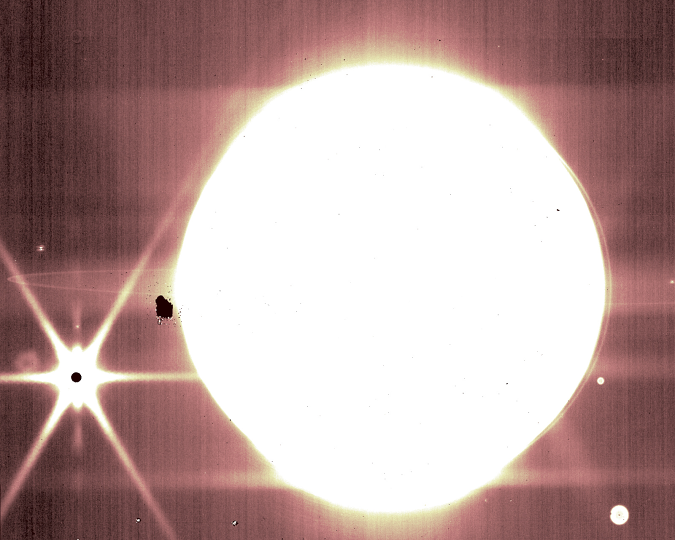

Changes brought by AI
Changes brought by AI
James Webb telescope can take detailed photos of our own solar system's planets and moons

Over the past few days, NASA has released stunning photos of nebulae, groups of galaxies and even the "deepest" view of the universe taken by the James Webb Space Telescope. Now, the agency has released images of something much closer to home that everyone's new favorite telescope — sorry, Hubble! — has captured.
When the James Webb team was calibrating the instrument, members took photos of Jupiter to see if it can be used to observe nearby celestial objects like moons and asteroids, as well other elements like planet rings and satellites. The answer, it turns out, is yes.
A photo taken by the telescope s Near-Infrared Camera (NIRCam) instrument’s short-wavelength filter (above) clearly shows the gas giant's distinct bands and its moon Europa. The Great Red Spot is also perfectly visible, even though it looks white due to the way the image was processed.
When the NIRCam instrument's 2.12 micron filter was used, the resulting image showed the Jovian moons Europa, Thebe, Metis and even Europa's shadow near the Great Red Spot. And when the team used NIRCam's 3.23 micron filter, the resulting image captured some of Jupiter's rings, as you can see below:

Bryan Holler, one of the scientists who helped plan these observations, said:
Combined with the deep field images released the other day, these images of Jupiter demonstrate the full grasp of what Webb can observe, from the faintest, most distant observable galaxies to planets in our own cosmic backyard that you can see with the naked eye from your actual backyard.
Its worth noting that James Webb captured these images moving across its field of view in three separate observations, proving that it's capable of finding and tracking stars in the vicinity of a celestial body as bright as Jupiter. That means it can be used to study moons in our solar system and could give us the first images of the plumes of material known to spew out of natural satellites like Europa and Saturn moon Enceladus.
The team also tracked asteroids in the asteroid belt to figure out the fastest objects it can observe. They found that it can still get gather data from objects moving up to 67 milliarcseconds per second across its field of view. NASA says thats equivalent to tracking a turtle moving from a mile away. As Stefanie Milam, James Webb's deputy project scientist, said, these images show that "everything worked brilliantly." We can expect not just more impressively detailed images of space in the future, but also information that could shed more light on how the first galaxies had formed.